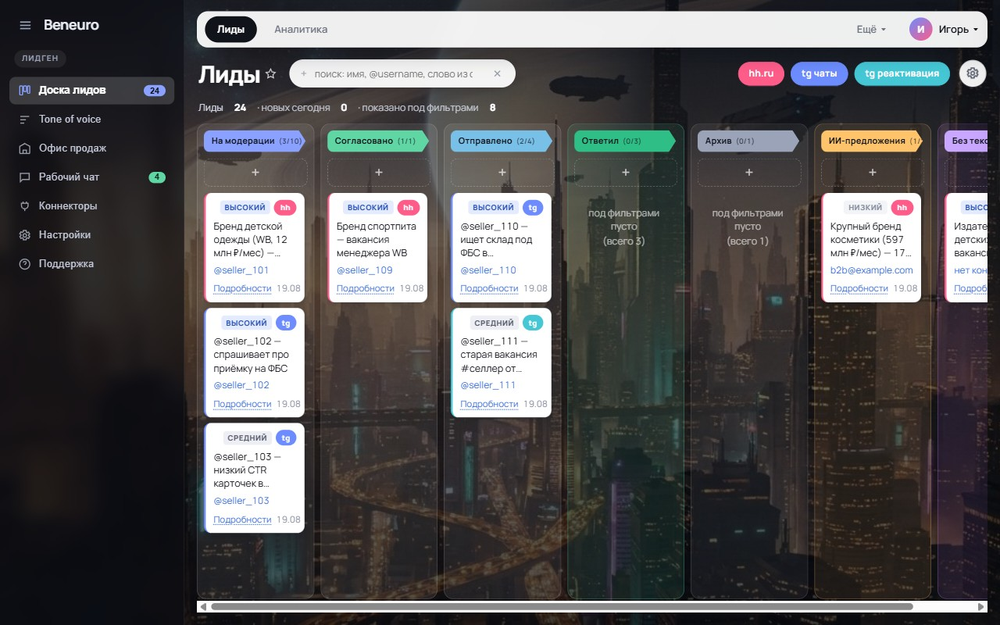

Сам находит клиентов и пишет им первым
Читаем чаты, каналы и вакансии. Находим тех, кому прямо сейчас нужен ваш продукт или услуга, и готовим персональное первое сообщение каждому. Вы открываете панель и смотрите, кому написал наш агент.
Пять шагов, и все без вас
Находим сигнал
Читаем чаты, каналы и вакансии, находим потенциальных клиентов в instagram, telegram, Вконтакте, Max и др.
Проверяем компанию
Анализируем боль этой компании, что им потенциально нужно
Ищем контакт
Находим у клиента telegram, номер телефона, почту, вконтакте или instagram
Пишем текст
Персональный, сосставленный из анализа компании
Кладём в панель
Вы смотрите уже готовый результат и ждёте новых клиентов
Настройка — 20 минут
Двенадцать вопросов в боте: кто вы, кого берёте в клиенты, как разговариваете. Дальше мы сами.
Мы решаем не хватку объёма сообщений и проблему слабых конверсий
Объёма не хватает
Столько стоит менеджер по продажам со всеми налогами и рабочим местом. И он всё равно физически обходит десятки контактов в день, а не сотни.
Конверсия слабая
Столько дают холодные рассылки. Причина простая: это один и тот же текст, отправленный всем подряд, и получатель это видит с первой строки. Наши конверсии находятся в диапазоне 8-35%
Примеры первого сообщения
Здравствуйте! Меня зовут Анна, компания «Топы продаж». Мы предлагаем полный комплекс ведения магазина для маркетплейсов: работа с карточками, поставками, внутреннее продвижение. Индивидуальный подход, выгодные условия. Готовы обсудить сотрудничество!
Здравствуйте! Увидел вашу вакансиюпо OZON. Посмотрел ваши магазины: на Wildberries вы стабильно делаете 1,5-2,5 млн в месяц, а на Ozon пока около 200 тысяч — и при этом объём выручки у похожих товаров на Ozon больше, чем на WB.
Похоже, площадкой просто никто не занимался вплотную.
У меня огромный опыт продвижения крупных магазинов, свои методики продвижения. Опыт с озон с 2023 года. Из близкого к вам: бренд CHEKASSO (косметика) — 3 года стояли на 0,8 млн, за 6 месяцев вышли на 2,2 млн, просто сменив стратегию продвижения.
Если интересна помощь с продвижением, буду ждать вашего сообщения!
Слева — текст, который подошёл бы кому угодно. СправаСверху — текст, который подошёл бы кому угодно.
Снизу — текст, который подходит только ему. Это и есть вся разница в конверсии.
Чем мы отличаемся от обычного парсера?
Как ищут лиды наши конкуренты
Парсеры ищут лидов по ключевым словам: "купить", "дом", "квартира". Парсер не анализирует это реальный лид, или рассылка от бота
Почему стоп-слова это не лечат
Бот и живой человек пишут одними и теми же словами. Отличить их можно, только прочитав сообщение и поняв, кто его написал и зачем.
Наш агент читает каждое сообщение целиком — поэтому в вашей панели не окажется ни ботов, ни таких же подрядчиков, как вы. Только реальные лиды.
Ищем человека, которому нужно прямо сейчас
Не «компанию из базы», а конкретный повод, по которому уместно написать сегодня.
Вакансия
«Менеджер по маркетплейсам Ozon» — бренд одежды, 200 артикулов, торгует только на WB. Значит, выходит на новую площадку и ему нужны руки.
Вопрос в чате
«Приёмка встала, товар лежит». Человек описал свою боль сам, своими словами, и ждёт ответа именно сейчас.
Старое объявление
Висит месяц, человека так и не нашли. Сигнал сильнее свежего: значит, проблема не решилась.
Один и тот же человек — лид для разных подрядчиков по-разному
Поэтому два клиента одной ниши у нас не конкурируют за одного человека: каждому уходит то, что относится к его услуге.
| Что спросил человек | Чей это лид | Кому не подходит |
|---|---|---|
| «Где хранить, приёмка встала» | Фулфилмент | агентству, дизайнеру |
| «СПП обнулилась, продажи упали» | Агентство | складу, карго |
| «CTR 1,2% при норме 4» | Дизайн-студия | складу, бухгалтеру |
| «Как считать налоги с маркетплейсов» | Бухгалтер | всем остальным |
| «Кто возит из Гуанчжоу» | Карго | всем остальным |
Одна неделя на реальном клиенте
Агентство маркетплейсов, ниша «селлеры»
лида найдено
Проверенных карточек с контактом и готовым текстом.
отправлено
Отправленных меньше, чем найденных - из-за лимитов по отправке на 1 аккаунт
ответили
32 ответа из 124. По лидам из чатов — 38%.
Каждый лид — карточка, а не строчка в таблице
Кто это, почему подходит, что он написал и готовый текст ответа. Открывается с телефона по ссылке, без установки и регистрации. Как только лид ответит — бот напишет вам в Telegram.

С чем сравнивать
| Способ | Сколько стоит | Что получаете |
|---|---|---|
| Свой менеджер | ~100 000 ₽/мес | Десятки контактов в день, отпуска, обучение |
| Реклама | 3 000–12 000 ₽ за лид | Заявку, если объявление попало в момент |
| Парсеры Telegram | 2 000–10 000 ₽/мес | Находят всех подряд, писать и разбирать кто реальный лил - вам |
| Beneuro | от 10 000 ₽/мес | Проверенную карточку с готовым текстом |
Десятки контактов в день, отпуска, обучение
Заявку, если объявление попало в момент
Находят всех подряд, писать и разбирать кто реальный лил - вам
Проверенную карточку с готовым текстом
Наши тарифы
Старт
- Все каналы: чаты, каналы, вакансии
- Панель и уведомления в Telegram
- Готовый текст к каждому лиду
- Отправка с вашего аккаунта, когда будете готовы
- Анализ клиента из его сообщения или объявления, без интернет-ресерча
Поток
Чаще берут- Всё из «Старта»
- Больше источников и глубже архив
- Глубокий анализ клиента в сети интернет: соцсети, финансовые показатели компании через сервисы аналитики и другие источники
- Если вашей ниши нет в нашем списке
- Разбираем нишу с нуля: кто лид и где живёт
- Первый месяц работы — без оплаты
Частые вопросы
Что такое Beneuro?
AI-отдел продаж для компаний, которые продают услуги селлерам маркетплейсов. Агент читает чаты, каналы и вакансии, находит тех, кому услуга нужна прямо сейчас, и готовит персональное первое сообщение каждому. Вы получаете готовые карточки лидов в панели.
Сколько это стоит?
«Старт» — 10 000 ₽ в месяц за 500 лидов, «Поток» — 20 000 ₽ за 1250 лидов. Глубокий анализ каждого лида («Агент-аналитик») — плюс 10 000 ₽ в месяц. Если вашей ниши у нас ещё нет, разбираем её с нуля за 50 000 ₽ разово — и месяц работы бесплатно.
Что вы считаете лидом?
Найденную и проверенную карточку: кто это, почему подходит именно вам, контакт и готовый текст первого сообщения. Не «сообщение из чата» и не факт отправки — отправка включается отдельно, когда вам понравится качество текстов.
Какая конверсия в ответы?
Холодные рассылки дают 0,4–3,4% ответов. Наши конверсии — в диапазоне 8–35% в зависимости от ниши и канала: сообщение опирается на то, что человек написал сам. На живом клиенте за неделю ответили 26% получателей, по лидам из чатов — 38%.
Чем это отличается от парсера чатов?
Парсер ищет по ключевым словам и присылает всех подряд — включая ботов и таких же подрядчиков, как вы. Наш агент читает каждое сообщение целиком и понимает, кто его написал и зачем, поэтому в панель попадают только реальные лиды.
Вы отправляете сообщения сами? Это безопасно для аккаунта?
Отправка идёт с вашего аккаунта Telegram и включается только когда вы посмотрели тексты в панели и готовы. Шлём небольшими порциями в пределах дневного лимита и только в рабочие часы — чтобы аккаунт не попадал под ограничения мессенджера. До включения отправки все тексты просто лежат в панели.
Кому подходит Beneuro?
Всем, кто продаёт услугу или продукт с чеком от 10 000 ₽ и хочет больше входящих диалогов: при таком чеке система окупается с первой же продажи. Сильнее всего мы сейчас в нишах вокруг маркетплейсов — агентства по Wildberries и Ozon, фулфилменты, фото- и дизайн-студии, карго, бухгалтеры. Если вашей ниши у нас ещё нет — разберём её с нуля по тарифу «Новая ниша».
Нужно ли что-то устанавливать?
Нет. Панель открывается по ссылке с телефона или компьютера, без установки и регистрации. Когда лид отвечает, уведомление приходит вам в Telegram.
Можно ли посмотреть, как это работает, до оплаты?
Да — откройте демо-панель на demo.beneuro.ai. Это живая панель с выдуманными лидами: карточки, готовые тексты, аналитика по каналам. Без регистрации.
Как быстро можно запуститься?
Настройка — около 20 минут: бот задаёт двенадцать вопросов о том, кто вы, кого берёте в клиенты и как разговариваете. Дальше поиск и первые лиды — на нас.
Двенадцать вопросов — и мы начинаем искать
Бот спросит, кто вы, кого берёте в клиенты и как разговариваете с людьми. Это минут двадцать. Дальше настройка и первые лиды — на нас.